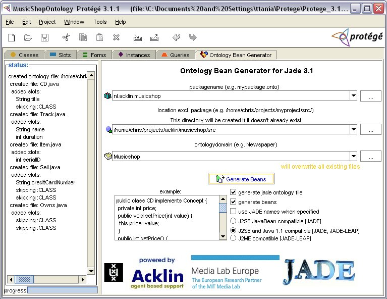

The ontology bean generator plugin is a Protégé Tab widget which generates java files representing an ontology that can be used with the JADE environment. With the beangenerator tool you can generate FIPA/JADE compliant ontologies from RDF(S), XML and Protégé projects.
This plugin works with both Protégé frames and Protégé OWL ontologies.
Installation
- Download the add-on zip file and unzip it
-
Extract the content of file plugin/beangenerator-plugin.zip into Protégé installation directory.
The operation creates the directories:- protege_install_dir/plugins/nl.uva.psy.swi.beangenerator with the plugin files
- protege_install_dir/plugins/nl.uva.psy.swi.beangenerator/ontologies with the basic JADE ontologies
- protege_install_dir/examples/jade-beangenerator with some Protégé sample projects
How to use the plugin
- Open a new or existing Protégé project
-
Include/import JADE Abstract Ontology from protege_install_dir/plugins/nl.uva.psy.swi.beangenerator/ontologies
- For Frames ontologies, include the SimpleJADEAbstractOntology.pprj into your project.
- For OWL ontologies, import the OWLSimpleJADEAbstractOntology.owl into your project.
-
Fill the ontology:
- Create concepts by making subclasses of the class Concept , e.g. CD, Items.
- Create agentactions by making subclasses of the class AgentAction , e.g. Sell, Buy .
- create agents by making subclasses of the class AID , e.g. Seller, Buyer
- Create predicates by making subclasses of the class Predicate , e.g. Owns, Contains
- Go to menu of Protégé: Project->Configure... and select the OntologyBeanGeneratorTab checkbox
-
Export the Java files
- Select the OntologyBeanGenerator tab
- Specify (or select from the combobox) a package name, e.g. mypackage.onto
- Specify (or select from the combobox or from the [...] button) a location where the java files are to be created (make sure the directory exists) e.g. .../projects/mypackage/src/mypackage/onto
- Specify (or select from the combobox) a ontology name: e.g. Newspaper
- Press the generate button (old generated files will be overwritten)
-
Use the exported Java files
- Import the the ontology files into your agent project
- Register the ontology in the agent
- You (the agents) are ready to go!
Limitations
- The plugin has be initially developed for Frames ontologies and later adapted for OWL. There are features that have not been tested with OWL ontologies. In case you find bugs, please report them on Protégé discussion lists. We will fix them as time permits.
- For OWL ontologies, datatype properties should be declared as functional.
Screenshot from MusicShopOntology example

Related links
- Protégé
- Jade tutorial with examples on how to use the bean generator plugin: http://jade.tilab.com/doc/CLOntoSupport.pdf
Author: C.J. van Aart